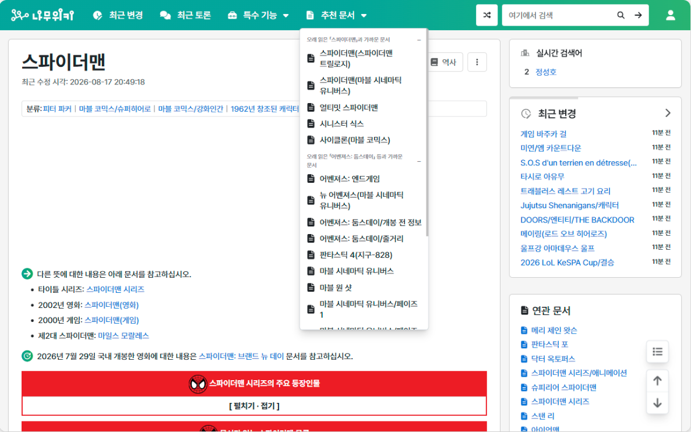

분석팀에 보낼 데이터를 만들 때 날짜 폴더 2,814개의 수정 시각을 확인했습니다. Iceberg로 읽기를 바꾸면서도 분석팀의 JSONL 입력과 새 기사 전달은 유지해야 했습니다.
폴더 시각 대신 테이블의 파일 목록과 행 수로 변경을 판단했습니다. 재구축 뒤에도 사흘간 새 기사가 들어왔으므로, 배치를 멈추고 두 저장소를 다시 대조한 뒤 읽기를 전환했습니다.
전환 직전 대조
양쪽 총건수
각 11,153,241건
날짜별 건수
2,814개 날짜, 불일치 0개
기사 번호 중복
Iceberg에서 0건
중복 이슈 대응
같은 사건에 새 번호가 붙어 서비스에 중복으로 보였습니다. 13일치 기록에서 이 문제를 찾은 뒤, 새 이슈를 내보내기 직전에 최근 3일 동안 발행한 이슈와 비교해 같은 사건이면 기존 번호를 쓰도록 했습니다. 첫 실행에서는 374개 중 81개를 기존 번호로 연결했고, 품질 지표 5개도 추가했습니다. 기사 분석 쪽 원인은 담당 팀원에게 넘겼습니다.
담당 경계와 전달
수집과 적재는 15분 주기, Spark는 단일 서버 local 모드입니다. Kafka 서버와 기사 분석은 팀원 담당입니다. 분석팀에 보내는 데이터 형식과 복구 절차를 문서로 남겼습니다.
Python, PySpark, 문서 임베딩, IndexedDB, Chrome Extension

크롬 웹스토어에 등록한 서비스 화면
8.8GB 덤프에서 가공한 문서
약 52만 개
521,633개 문서 / 19,015,524개 링크
1,024개 파일, 압축 합계 154.3MB 배포
핵심 판단
혼자 운영할 수 있는 범위를 먼저 정했습니다.
열람 기록을 서버에 모으는 구조는 개인정보 처리와 운영 부담이 컸습니다. 개인화는 브라우저에 남기고 추천 관계는 미리 계산해 파일로 배포하기로 했습니다.
8.8GB 처리 중 메모리 부족으로 멈췄을 때는 Spark 드라이버 메모리를 8GB에서 10GB로 늘리고, 파티션 크기를 128MB에서 64MB로 줄여 처리했습니다. 첫 버전은 2주 안에 완성해 스토어에 제출했습니다.
서버를 두지 않는 대신 새 문서 대응과 사용자 로그를 통한 추천 품질 측정은 남았습니다.
계산은 PC에서, 개인화는 브라우저에서
01
공식 덤프 8.8GB파싱과 정제 / 링크 해석률 95.6%
02
문서별 추천 관계 계산미리 계산한 이웃 데이터
03
GitHub Pages 파일 배포1,024개 파일 / 필요한 파일만 읽기
04
IndexedDB에서 개인화열람 기록은 브라우저에 보관
게시 후 바꾼 조건
잠깐 열어 본 문서까지 다른 문서를 추천하는 근거로 쓰였습니다. 그래서 누적 체류 시간이 30초 미만인 문서는 추천의 근거에서 제외했습니다. 열람 기록은 남겨 두므로, 다시 읽어 누적 30초를 채우면 근거로 쓸 수 있습니다. 30초는 초기 기준이며 추천 품질의 측정값은 아닙니다.